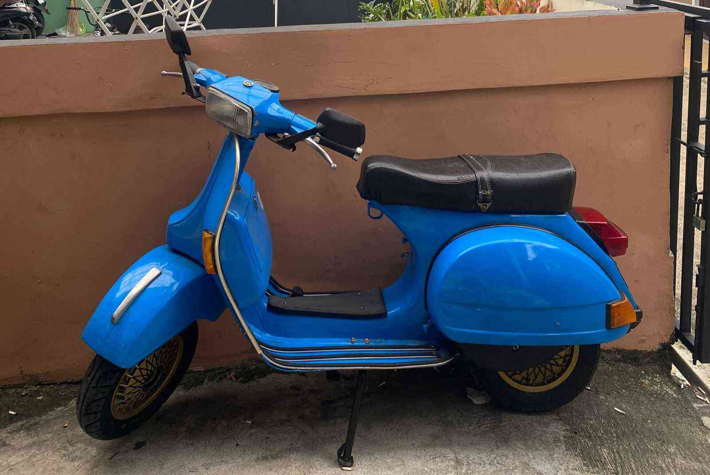

Mata Pelajaran TIK

Siswa Kolese Kanisius Jakarta
Kelas: XIS7
Sekolah: Kolese Kanisius
Hobi: Coding & Design
Cita-cita:Investment Banker
Saya adalah siswa kelas XIS7 dari Kolese Kanisius yang memiliki minat dalam bidang ekonomi, khususnya investasi dan pasar saham. Saya senang mempelajari cara kerja pasar modal, analisis saham, serta perkembangan ekonomi yang memengaruhi dunia keuangan. Selama semester ini, saya telah mempelajari HTML, CSS, dan JavaScript untuk membuat berbagai project website interaktif. Dari pembelajaran tersebut, saya memahami dasar-dasar pembuatan dan pengembangan website, mulai dari tampilan hingga fungsi interaktifnya. Saya ingin mempelajari pemrograman web lebih dalam agar dapat mengembangkan kemampuan teknologi yang berguna di masa depan, serta menggabungkan minat saya di bidang ekonomi dengan dunia digital.
| No | Materi | Nilai |
|---|---|---|
| 1 | Matematika Trans Geometri | 92 |
| 2 | Mandarin - Basic Introductions | 90 |
| 3 | Akuntansi - Special Journal | 95 |
| 4 | Sejarah Indonesia | 95 |
| 5 | Mini Project Website | 100 |